Next: Reinforced concrete cantilever beam Up: Simple example problems Previous: Channel with hydraulic jump Contents
Previously, a thick cantilever beam was modeled with volume elements. In the present section quadratic beam elements are used for a similar exercise (Section 6.2.33). Beam elements are easy to define: they consist of three nodes on a line. Internally, they are expanded into volumetric elements. There are two types of beam elements: B32 elements, which are expanded into C3D20 elements, and B32R (reduced integration) elements, which are expanded into C3D20R elements. Based on the results in the present section, the B32R element is highly recommended. The B32 element, on the other hand, should be avoided especially if section forces are needed.
The first cantilever beam which is looked at is 100 mm long and has a square cross section of 2 x 2 mm. The axis of the beam is along the global z-direction. This beam is modeled with just one element and loaded at its end by a unit force in x-direction, Figure 38. We are interested in the stresses at integration point a and at node b, the section forces at the beam's fixed end, and the displacement in x at the free end. The location of the integration point a is at 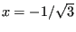, 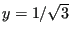 and 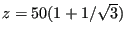, the nodal coordinates of b are 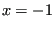, 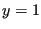 and 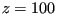 [19]. The material is isotropic linear elastic with a Young's modulus of 100,000 MPa and a Poisson's ratio of 0.3.
The input deck for this example is very similar to the simplebeam.inp example in the test suite:
** ** Structure: cantilever beam, one element ** Test objective: B32R elements. ** *NODE,NSET=Nall 1, 0, 0, 0 2, 0, 0, 50 3, 0, 0, 100 *ELEMENT,TYPE=B32R,ELSET=EAll 1,1,2,3 *BOUNDARY 3,1,6 *MATERIAL,NAME=ALUM *ELASTIC 1E7,.3 *BEAM SECTION,ELSET=EAll,MATERIAL=ALUM,SECTION=RECT 2.,2. 1.d0,0.d0,0.d0 *STEP *STATIC *CLOAD 1,1,1. *EL PRINT,ELSET=Eall S *NODE FILE U *EL FILE,SECTION FORCES S,NOE *END STEP
The stresses at the integration points are obtained by a *EL PRINT card, the stresses at the nodes by the OUTPUT=3D option (default) on the *EL FILE card, whereas for the section forces the SECTION FORCES option on the same card is used (this option is mutually exclusive with the OUTPUT=3D option). The displacements are best obtained in the non-expanded view, i.e. using the OUTPUT=2D option. This means that for the present results the example had to be run twice: once with the OUTPUT=3D option and once with the SECTION FORCES option.
The results are summarized in Table 3. The mm N s K system is used. The reference results are analytical results using simple beam theory [67]. The agreement is overwhelming. The stresses at the integration points match exactly, so do the extrapolated normal stresses to the nodes. The shear stresses need special attention. For a beam the shear stress varies parabolically across the section. A quadratic volumetric element can simulate only a linear stress variation across the section. Therefore, the parabolic variation is approximated by a constant shear stress across the section. Since the reduced integration points (at 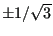) happen to be points at which the parabolic stress variation attains its mean value the values at the integration points are exact! The extrapolated values to the nodes take the same constant value and are naturally wrong since the exact value at the corners is zero.
The section forces are obtained by
As shown by Table 3 this procedure yields the correct section forces for the square beam.
The displacements at the beam tip are off by 10 %. The deformation of a beam subject to a shear force at its end is third order, however, the C3D20R element can only simulate a quadratic behavior. The deviation is reduced to 2.4 % by using 5 elements (Table 4). Notice that integration point a is now closer to the fixation (same position is before but in the element adjacent to the fixation).
The same beam was now subjected to a torque of 1 Nmm at its free end. The results are summarized in Table 5.
The torque is matched perfectly, the torsion at the end of the beam (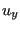 is the displacement in y-direction at the corresponding node of node b) is off by 15 % [67]. The shear stresses at node b are definitely not correct (there is no shear stress at a corner node), however, the integration of the values interpolated from the nodes at the facial integration points yields the exact torque! Using more elements does not change the values in Table 5.
The same exercise is now repeated for a circular cross section (radius = 1 mm, same length, boundary conditions and material data as for the rectangular cross section). For such a cross section the vertex nodes of the element lie at 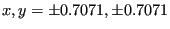, whereas the middle nodes lie at 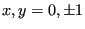 and 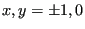. The integration points are located at 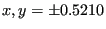. The results for bending with just one element are shown in Table 6 and with 5 elements in Table 7.
For just one element the shear stress is quite close to the analytical value, leading to a even better match of the shear force. This is remarkable an can only be explained by the fact that the cross area of the piecewise quadratic approximation of the circular circumference is smaller and exactly compensates the slightly higher shear stress. A similar effect will be noticed for the torque. The normal stress, however, is far off at the integration points as well as at the nodes leading to a bending moment which is way too small. The same applies to the deformation in x-direction. Using five elements leads to a significant improvement: the bending moment is only 2 % off, the deformation at the free end 9 %. Here again one can argue that the deformation is of cubic order, whereas a quadratic element can only simulate a quadratic change. Using more elements consequently improves the results.
The results for a torque applied to a circular cross section beam is shown in Table 8 (1 element; the results for 5 elements are identical).
Again, it is remarkable that the torque is perfectly matched, although the shear stress at the integration points is 6 % off. This leads to shear values at the vertex nodes which are 19 % off. Interpolation to the facial integration points yields shear stresses of -0.305 MPa. Integration of these stresses finally leads to the perfect torque values. The torsion angle at the end of the beam is 7 %off.
Summarizing, one can state that the use of C3D20R elements leads to quite remarkable results:
It is generally recommended to calculate the stresses from the section forces. The only drawback is the C3D20R element may lead to hourglassing, leading to weird displacements. However, the mean of the displacements across the cross section is usually fine. An additional problem which can arise is that nonlinear geometric calculations may not converge due to this hourglassing. This is remedied in CalculiX by slightly perturbing the coordinates of the expanded nodes (by about 0.1 %).
A similar exercise was performed for the B32 element, however, the results were quite discouraging. The section forces were, especially for bending, way off.